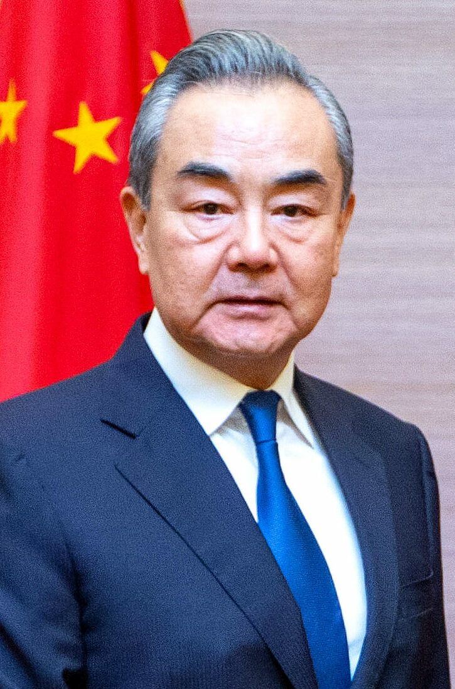

왕이, 22~23일 인도서 BRICS 안보대표회의 출석… 9월 정상회의 준비
중국 외교부가 왕이 정치국원이 22~23일 인도에서 열리는 BRICS 안보 고위대표 회의에 참석한다고 밝혔다. 9월 정상회의를 위한 정치적 준비 성격이다.
임숙분 기자 · 2026.06.19
橋중국·외교

중국 외교부 대변인은 정례 브리핑에서 왕이 중앙정치국원 겸 중앙외사판공실 주임이 22~23일 인도에서 열리는 제16차 BRICS 안보사무 고위대표 회의에 참석한다고 밝혔다. 9월로 예정된 BRICS 정상회의를 위한 사전 조율이다.
광고 문의 · 300×250외교부는 이 회의에서 중국이 BRICS 회원국과 국제 안보 정세, 주요 국제·지역 현안, 전통·비전통 안보 위협의 공동 대응을 논의할 것이라고 설명했다. 다자 협의를 통한 정책 조율의 장으로 의미를 부여했다.
BRICS는 신흥·개도국의 협력 플랫폼으로 외연을 넓혀 왔다. 안보 대표 회의는 정상회의의 의제를 사전에 가다듬는 실무·고위급 절차로 기능한다.
華橋時報는 외교 일정과 다자 협력 동향을 중립적으로 전한다. 다자 외교의 흐름은 국제 정세와 교역 환경에 영향을 주며, 화인 경제권에도 간접적인 시사점을 남긴다.
출처·참고 (사실 확인용 — 본문은 직접 재작성)
· 중국 외교부
· 중국 외교부